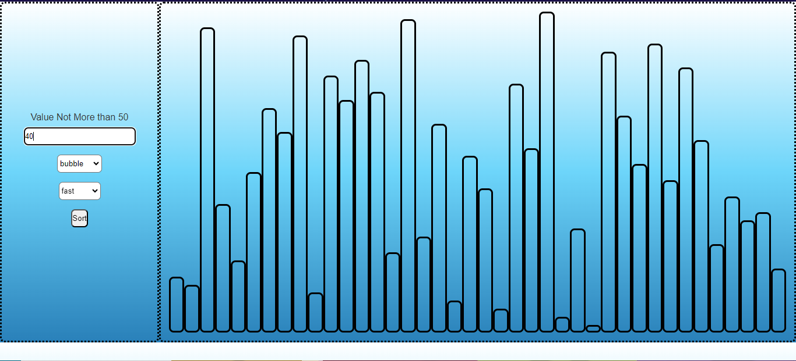

Intro

I am a self-taught learner with a passion for exploring new domains. Currently, I am a Software Analyst at PTC, a US-based product company, where I have been awarded three times in two years. Previously, I worked as a Software Engineer at MiniOrange, a bootstrap startup in the security domain.
I have completed the CS50 Web Programming with Python and JavaScript course and hold an NPTEL certificate in Advanced Graph Theory. Additionally, I have been a training instructor in a program provided by Accio.
Key expertise:
JAVA
GitLab
Python
Postman
CI-CD
PostgreSQL
Docker
AZURE
Hobbies:
Photo Editing
Guitar
Video Editing
Badminton
Swimming
Project
Sorting Algo Visualizer
Skill Required: JavaScript
HTML
CSS
Algorithm

Created an interactive Website to Visually represent the Sorting Algorithm.
Link --->>>
Turtle Race Master
Skill Required: Python
Object-Oriented Programming
Fuzzy Logic
Algorithm

Creating a turtle race simulator from scratch which uses fuzzy inputs so that max membership function turtle wins, where else it also shows the crisp output. It helps us to understand the importance of a fuzzy system in the real world. Its main challenge of doing that project was not to use the fuzzy module in python
Output
Would you like to play again Yes
write the input fuzzy value for the turtle 1
write the input fuzzy value for the turtle 2
write the input fuzzy value for the turtle 5
write the input fuzzy value for the turtle 3
write the input fuzzy value for the turtle 8
write the input fuzzy value for the turtle 1
write the input fuzzy value for the turtle 2
write the input fuzzy value for the turtle 6
The actual crisp value for the given fuzzy set:
4.448
The winner is:
pink
GitHub Link --->>>
Sudoku Solving Algorithm
Skill Required: Python
Algorithm
Data Structure

In this project, I have created two algorithms to solve a Sudoku in which one uses a Backtracking algorithm where else another code doesn't use a backtracking algorithm.
GitHub Link --->>>
Voice Assistant
Skill Required: Python
Operating System
Audio Processing

It was a project in which the system interacts with the user on an audio basis and helps the user to do the task. It is the enhanced version of other relatable assistants as here we even have access to the operating system
GitHub Link --->>>
Event Site
Skill Required: Python
Django
Bootstrap
Object-Relational Mapping

In this project, I have created an Event site using bootstrap and give it a server using Django local server.
Face Mask
Skill Required: Python
Computer Vision
Video Processing

It was a project in which I learn and understand how to use computer vision so that we create landmarks on the face through which we can do many interesting things.
We use shape_predictor_68_face_landmarks.dat for our project which has been trained by ibug database which is over 5000 over database images so that's why it is very accurate and fast.
GitHub Link --->>>
Drowsy Detection
Skill Required: Python
Computer Vision
Video Processing
Algorithm


In this Project, we moved one step ahead of the Face Mask and created a drowsy detection system. With the help of the landmarks on the eyes, we created and find the value of the eye aspect ratio. which help us to find that whether the person is sleepy or not
GitHub Link --->>>
Fire alarm mechanism
Skill Required: PCB Design
Op-Amp Operation
We learn how to use an op-amp, and with the help of a thermister we could actually generate a fire alarm mechanism which detects heat
Street light timing mechanism
Skill Required: 8051 Programming
Algorithm
We learn how to use an 8051 programming chip to create a timing mechanism which can be used for street lights
Workshop
Quadrator

It was a two-day workshop in which on the first day we learn the physics of the copter like how the wings lift the plane, Thrust, Drag, Lift, Payload, Roll Motion, YawnMotion, Pitch Motion.
On the second day, we created our own quadra-copter using KK2.1.5 flight microcontroller and even assign a PID system to the copter and at the end, we fly it in the ground.
Bluetooth, voice control car

It was a two-day workshop in which on the first day we learn the basics of Arduino and how it works
On the second day, we coded the Arduino and connect all the circuit and with the help of Arduino Bluetooth Control we creted the Bluetoot and voice control car
PTC
Key Skill:
Azure Container
Gitlab
Gitlab Runner
CI-CD
Java
Python
Postman
ANT
Groovy
Jenkins
Azure VMs
TerraForm
Salt
Slack
HTML
CSS
JavaScript
Currently, I serve as a Software Analyst at PTC, where I am part of the migration team responsible for transitioning on-premises devices to cloud infrastructure.
We have developed an internal tool within Windchill called CCD (Code Configuration and Deployment Tools). This tool is primarily responsible for configuring customer artifacts, code, and data, compiling it, and distributing it within Windchill.
Additionally, we created a cloud infrastructure tool, WC-SCCM (Windchill Source Code Cloud Management), which operates in GitLab. This tool is primarily used for version management of customer customizations and for retrieving customer data when needed.
I have worked on all aspects of these tools, with my major contribution being the creation of the pipeline for WC-SCCM Testcase Data and ChainSet Management UI Tools.
MiniOrange
Key Skill: Security Protocols
SAML
OAuth
PHP
Drupal
Postman
JSON
Web API
As part of the bootstrap startup MiniOrange, I had the opportunity to work on various login security protocols.
My primary contributions included the integration and advancement of Drupal SAML IDP and adding mapping options in the Drupal OAuth Client. Additionally, I worked on REST API authentication methods and had direct interactions with customers.
Internship
Key Skill: Django
Flask
PHP
Celery
Postman
JSON
Web API
SQLite
PostgreSQL
MongoDB
NoSQL
Nginx
HTML
CSS
Javascript
ORMs

I participated in an internship in the analytics domain, where I learned the crucial skill of self-directed learning.
During the internship, I was assigned various tasks. I created an eCommerce site for a customer and tested several websites. The most notable project I completed was developing a full-stack website that functions as both an API and an essay analyzer, similar to the PTE.